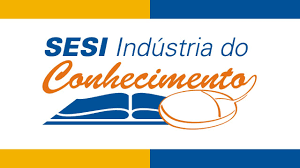

Sesi
O que é o Sesi?
Serviço Social da Indústria (SESI) é o nome dado à instituição privada brasileira de promoção do bem-estar e qualidade de vida dos funcionários da Indústria, assim como de seus dependentes, familiares e da sociedade em geral.
Dentre as áreas de atuação do SESI estão a assistência social, a cultura, a educação, o lazer e a saúde, que são promovidos através de programas ligados à formação, informação e prestação de serviços ao público-alvo.
O SESI conta ainda com uma ampla estrutura administrativa, que o permite estar presente em todos os 27 estados brasileiros. A sua organização e supervisão fica por conta da Confederação Nacional da Indústria (CNI), que também é responsável por outras importantes instituições, como é o caso do Serviço Nacional de Aprendizagem Industrial (o SENAI) e do Instituto Euvaldo Lodi (IEL).
A criação do SESI se deu ainda em 1946, o que lhe confere a expertise de mais de 7 décadas de atuação no desenvolvimento humano, social e cultural de crianças, jovens, adultos e idosos em diversas áreas do país.
Com suas unidades regionais, o SESI é capaz de criar programas específicos para atender às necessidades especiais de cada um desses sujeitos, que varia conforme o seu contexto sócio-econômico e o complexo empresarial da área em que vivem.
Como o Serviço Social da Indústria (SESI) funciona?
O SESI é uma instituição de direito privado e toda a sua administração é subordinada às diretrizes do CNI.
Especificamente para o gerenciamento do SESI, fora criado o Conselho Nacional do SESI, que é o responsável por definir os seus programas, supervisionar as suas atividades e estabelecer metas a serem cumpridas pelas unidades.
O Conselho Nacional do SESI é formado por: o presidente do próprio CNI, presidentes das federações de indústrias de cada estado e representantes do Instituto Nacional da Seguridade Social (o INSS), entre outros membros ilustres do setor industrial.
Para o financiamento da instituição é recolhida uma alíquota fixa de cada empresa ligada ao setor industrial do Brasil. A taxa incide diretamente sobre a folha de pagamento, assim como os demais encargos e tributos, sendo primeiramente destinado ao Estado.
A esse último cabe repassar os valores recolhidos à título de contribuição ao CNI, que então a distribui entre cada uma de suas instituições (SESI, SENAI e IEL).
Por estar inteiramente atrelado à folha de pagamento das indústrias, o orçamento do SESI aumenta conforme o setor cresce e emprega mais pessoas - segundo estimativas, o valor arrecadado pela organização dobra a cada 6 anos.

Para que serve o Serviço Social da Indústria (SESI)?
Como você já sabe, o SESI se dedica a promover a assistência, a cultura, educação, o lazer e a saúde para os empregados da Indústria, os seus parceiros e filhos, assim como da comunidade à sua volta.
Alguns exemplos de como isso é feito:
Assistência: Voluntariado; assistência social para grupos vulneráveis; grupos de desenvolvimento da melhor idade etc.
Cultura: Bibliotecas; feiras literárias; mostras de cinema; apresentações de teatro; exposições de artes plásticas etc.
Educação: Ensino infantil, fundamental e médio, além do EJA;
Lazer: Avaliação física; grupos de futebol, ginástica, voleibol, basquete etc.
Saúde: Assistência odontológica; prevenção de doenças; orientação para empresas em saúde ocupacional e prevenção de acidentes de trabalho etc.